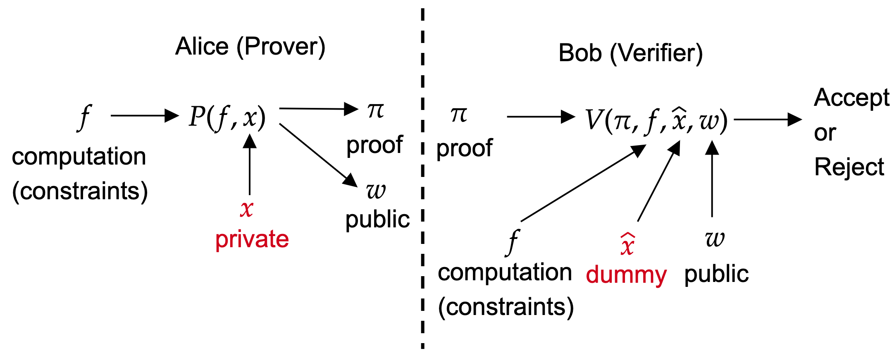
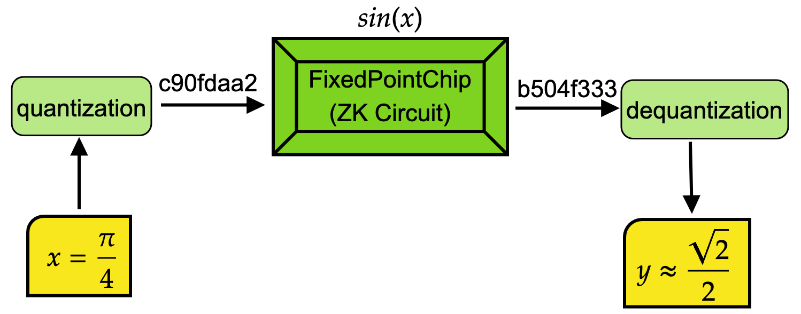
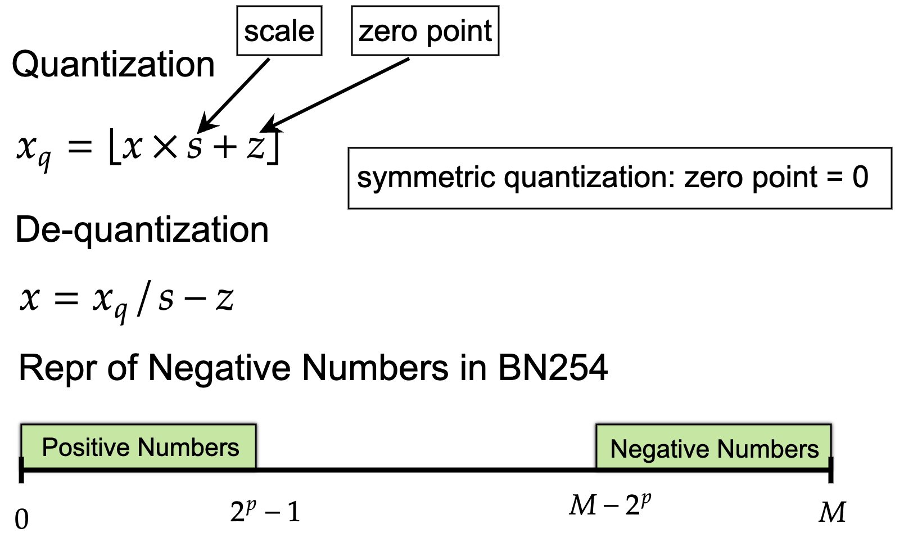
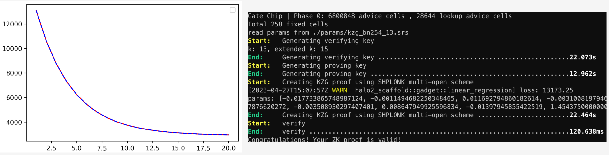
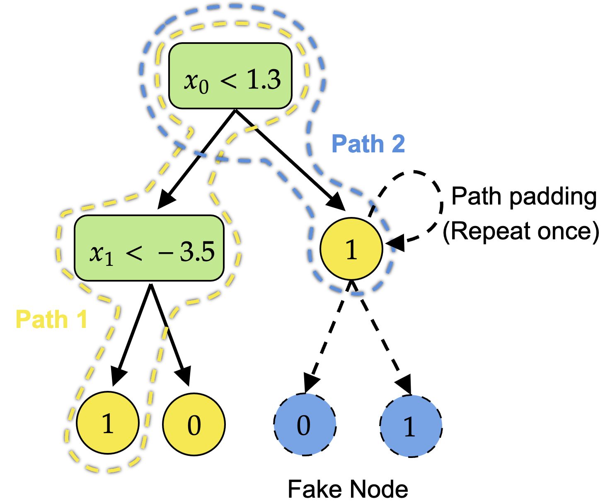
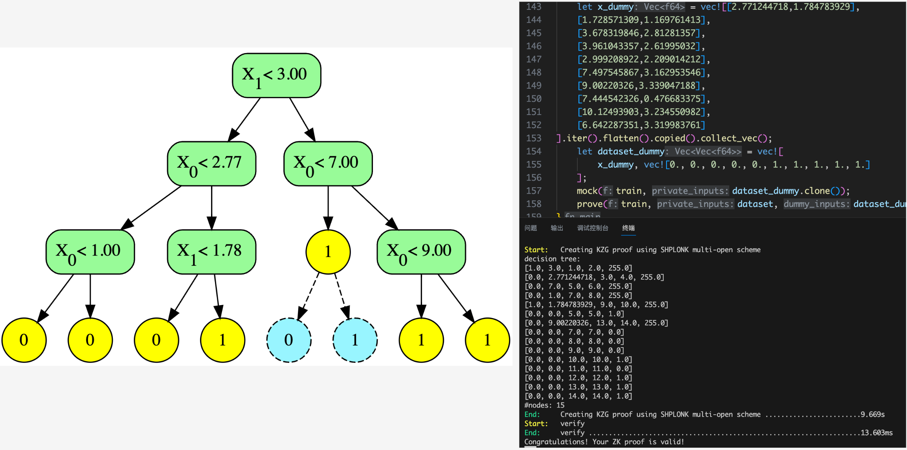

ZKFixedPointChip
Mathematical Foundations of Halo2 and Zero-Knowledge Machine Learning

- Modular arithmetic — comfortable with $a \bmod p$, greatest common divisors, and basic number theory (covered in any introductory discrete mathematics course).
- Linear algebra — vectors, matrices, dot products; used in the ML sections.
- Polynomials — polynomial division, roots, and the factor theorem at the high-school level.
- Probability — basic probability notation $\Pr[\cdot]$; no measure theory needed.
- Programming familiarity — pseudocode and Rust-like syntax appear in examples; no deep Rust knowledge required.
This project implements ZK Machine Learning (ZKML): running ML algorithms (linear regression, logistic regression, decision trees) inside zero-knowledge circuits. The core challenge is that ZK circuits over the BN254 field natively support only $+$, $-$, $\times$ on unsigned integers—no fractions, no floats, no transcendental functions. This document builds the mathematical foundations needed to bridge that gap, from finite fields up through the Halo2 proving system to fixed-point ML circuits.
1. Finite Fields
All computation inside a zero-knowledge proof happens over a finite field, not ordinary real numbers. Think of it as doing arithmetic on a clock face, where the numbers wrap around.
The key properties that make $\mathbb{F}_p$ a field (analogous to the reals $\mathbb{R}$, but finite):
- Closure: addition and multiplication stay inside $\{0,\dots,p-1\}$.
- Inverses: every nonzero $a$ has a unique multiplicative inverse $a^{-1}$ such that $a \cdot a^{-1} \equiv 1 \pmod{p}$. (Computed via Fermat's little theorem: $a^{-1} = a^{p-2} \bmod p$.)
- No zero divisors: if $a \cdot b \equiv 0 \pmod p$, then $a = 0$ or $b = 0$.
This project uses the BN254 scalar field, where:
$$p = 21888242871839275222246405745257275088548364400416034343698204186575808495617$$This is a 254-bit prime. Every value we compute (weights, inputs, polynomial coefficients) lives in $\mathbb{F}_p$.
1.1 Cyclic Groups
A group $(G, \circ)$ is a set $G$ with an operation $\circ$ that is associative, has an identity, and every element has an inverse.
The multiplicative group $\mathbb{F}_p^* = \mathbb{F}_p \setminus \{0\}$ is cyclic of order $p-1$. This means there exists a generator $g$ such that $\{g^0, g^1, g^2, \dots, g^{p-2}\} = \mathbb{F}_p^*$.
Crucially, if $n$ divides $p-1$ (written $n \mid (p-1)$), then there exists an element $\omega \in \mathbb{F}_p$ of order $n$, meaning $\omega^n = 1$ and $\omega^k \neq 1$ for $0 < k < n$. These are the $n$-th roots of unity, and they enable the NTT (Number Theoretic Transform) that makes polynomial arithmetic efficient inside Halo2.
1.2 Extension Fields
Just as the real numbers $\mathbb{R}$ can be extended to the complex numbers $\mathbb{C} = \mathbb{R}[i]/(i^2+1)$ by adjoining $\sqrt{-1}$, finite fields can be extended similarly.
Take $p = 5$ and the irreducible polynomial $m(x) = x^2 + 2$ over $\mathbb{F}_5$. (It's irreducible because neither $0, 1, 2, 3, 4$ is a root: $0^2 + 2 = 2$, $1^2+2=3$, $2^2+2=1$, $3^2+2=1$, $4^2+2=3$—none are zero mod 5.)
Elements look like $a + bx$ with $a, b \in \mathbb{F}_5$. There are $5^2 = 25$ elements. To multiply $(2 + 3x)(1 + 4x)$:
$$2 + 8x + 3x + 12x^2 = 2 + 11x + 12x^2 \equiv 2 + x + 2x^2 \pmod{5}.$$Now reduce $x^2 \equiv -2 \equiv 3 \pmod{m(x)}$, giving $2 + x + 2 \cdot 3 = 8 + x \equiv 3 + x \pmod{5}$.
Extension fields matter for elliptic curve pairings (Section 3). The pairing's target group $\mathbb{G}_T$ lives in $\mathbb{F}_{p^{12}}^*$—a degree-12 extension of $\mathbb{F}_p$. Each element of $\mathbb{F}_{p^{12}}$ is a polynomial of degree 11 with $\mathbb{F}_p$ coefficients, so it takes 12 field elements to represent. In practice, tower extensions like $\mathbb{F}_{p^2} \to \mathbb{F}_{p^6} \to \mathbb{F}_{p^{12}}$ are used for efficiency.
2. Elliptic Curves
Elliptic curves provide the "hard problems" that make cryptography secure. They also give us the algebraic structure needed for polynomial commitments.
2.1 The Curve Equation
The condition $4a^3 + 27b^2 \neq 0$ ensures the curve has no singular points (cusps or self-intersections). For the BN254 curve used in this project, $a = 0$ and $b = 3$, giving:
$$E_{\text{BN254}} : \quad y^2 = x^3 + 3 \quad \text{over } \mathbb{F}_p.$$But how do we determine whether a value has a square root in $\mathbb{F}_p$, and how do we compute it? This is where Euler's criterion and Fermat's little theorem come in.
Euler's criterion gives a simple test: $a$ is a QR if and only if
$$a^{(p-1)/2} \equiv 1 \pmod{p}.$$If the result is $p - 1$ (i.e., $-1$), then $a$ has no square root in $\mathbb{F}_p$, and the point $(x, \cdot)$ is not on the curve.
When $a$ is a QR and $p \equiv 3 \pmod{4}$ (which is the common case for many cryptographic primes), the square root can be computed directly:
$$r = a^{(p+1)/4} \bmod p.$$Is $x = 0$ on the curve $y^2 = x^3 + x + 1$ over $\mathbb{F}_{23}$? Compute $a = 0^3 + 0 + 1 = 1$.
- Test (Euler): $1^{(23-1)/2} = 1^{11} = 1 \equiv 1 \pmod{23}$. Yes, 1 is a QR.
- Square root: Since $23 \equiv 3 \pmod 4$, compute $r = 1^{(23+1)/4} = 1^6 = 1$.
- Points: $(0,\; 1)$ and $(0,\; 23 - 1) = (0,\; 22)$.
Now try $x = 1$: $a = 1 + 1 + 1 = 3$. Test: $3^{11} \bmod 23 = 177147 \bmod 23 = 1$. So 3 is a QR. Root: $r = 3^{6} = 729 \bmod 23 = 16$. Points: $(1, 16)$ and $(1, 7)$.
Now try $x = 3$: $a = 27 + 3 + 1 = 31 \equiv 8 \pmod{23}$. Test: $8^{11} \bmod 23 = 22 \equiv -1$. So 8 is a NR—no points at $x = 3$.
For primes where $p \equiv 1 \pmod 4$ (including the BN254 prime), the Tonelli-Shanks algorithm is used instead. The details are more involved, but the key takeaway is: finding square roots in $\mathbb{F}_p$ is efficient (polynomial time), so enumerating curve points is computationally feasible.
2.2 The Group Law (Point Addition)
The remarkable fact is that the points on an elliptic curve form an abelian group under a geometric addition rule. The identity element is $\mathcal{O}$.
Case 1: Adding two distinct points $P + Q$
Given $P = (x_1, y_1)$ and $Q = (x_2, y_2)$ with $x_1 \neq x_2$:
- Draw the line through $P$ and $Q$. It intersects $E$ at exactly one more point $R'$.
- Reflect $R'$ over the $x$-axis to get $R = P + Q$.
The formulas are:
$$\lambda = \frac{y_2 - y_1}{x_2 - x_1}, \qquad x_3 = \lambda^2 - x_1 - x_2, \qquad y_3 = \lambda(x_1 - x_3) - y_1.$$Case 2: Point doubling $P + P = 2P$
When $P = Q$, the "line through $P$ and $Q$" becomes the tangent line at $P$. Using implicit differentiation on $y^2 = x^3 + ax + b$:
$$\lambda = \frac{3x_1^2 + a}{2y_1}, \qquad x_3 = \lambda^2 - 2x_1, \qquad y_3 = \lambda(x_1 - x_3) - y_1.$$Case 3: Inverse
The inverse of $P = (x, y)$ is $-P = (x, -y)$. If $P + Q = \mathcal{O}$, then $Q = -P$.
2.3 Scalar Multiplication and the Discrete Logarithm
Scalar multiplication is defined as repeated addition: for an integer $k$,
$$[k]P = \underbrace{P + P + \cdots + P}_{k \text{ times}}.$$This can be computed efficiently in $O(\log k)$ steps via double-and-add. However, the reverse problem (given $P$ and $Q = [k]P$, find $k$) is called the Elliptic Curve Discrete Logarithm Problem (ECDLP), and it is believed to be computationally intractable. This hardness is the foundation of elliptic-curve cryptography.
For BN254, the group has a large prime-order subgroup of order $r$, which is the scalar field we do arithmetic in.
3. Elliptic Curve Pairings
Pairings are a powerful tool that enables the verification step in KZG polynomial commitments. A pairing "multiplies" points from two different curve groups and maps them into a third group.
3.1 Bilinear Maps
- Bilinearity: $e([a]P, [b]Q) = e(P, Q)^{ab}$ for all $a, b \in \mathbb{Z}$ and $P \in \mathbb{G}_1, Q \in \mathbb{G}_2$.
- Non-degeneracy: if $P \neq \mathcal{O}$ and $Q \neq \mathcal{O}$, then $e(P, Q) \neq 1$.
- Computability: $e$ can be computed efficiently (via the Tate or optimal Ate pairing).
The integer $k$ is called the embedding degree. For BN254, $k = 12$, meaning $\mathbb{G}_T \subset \mathbb{F}_{p^{12}}^*$.
3.2 Why Pairings Matter
The bilinearity property is the key. It lets a verifier check polynomial equations "in the exponent"—that is, verify relationships between secret values that are hidden inside elliptic curve points, without ever seeing those values directly.
What does "in the exponent" mean?
Recall that $[a]G_1$ means $\underbrace{G_1 + G_1 + \cdots + G_1}_{a \text{ times}}$. The scalar $a$ is "locked inside" the curve point—given $[a]G_1$, you cannot extract $a$ (that's the discrete log problem). We say $a$ is "in the exponent" because the notation mirrors $g^a$ in multiplicative groups.
Now suppose someone gives you two curve points $A = [a]G_1$ and $B = [b]G_2$, and you want to check whether $a \cdot b = c$ for some known $c$—without knowing $a$ or $b$. Ordinary arithmetic can't help: you can't multiply curve points. But pairings can:
$$e(A, B) = e([a]G_1,\; [b]G_2) = e(G_1, G_2)^{ab}.$$Meanwhile, you can independently compute $e(G_1, G_2)^c$. If $e(A, B) = e(G_1, G_2)^c$, then $ab = c$. You just verified a multiplication of hidden values using only their curve-point "encryptions."
Suppose a prover claims they know $a, b$ such that $a \cdot b = 6$, and they give you $A = [a]G_1$, $B = [b]G_2$. You check:
$$e(A, B) \stackrel{?}{=} e([6]G_1,\; G_2).$$By bilinearity, the left side equals $e(G_1,G_2)^{ab}$ and the right side equals $e(G_1,G_2)^6$. These are equal if and only if $ab = 6$. You verified the relationship without learning $a$ or $b$.
This is exactly how KZG verification works (Section 4): the verifier checks that $q(\tau) \cdot (\tau - \zeta) = f(\tau) - v$ (a polynomial equation in the secret $\tau$) by comparing pairings of curve points that "contain" these values in their exponents.
4. Polynomial Commitments (KZG)
A polynomial commitment scheme allows a prover to commit to a polynomial and later prove evaluations of it. This project uses the KZG (Kate-Zaverucha-Goldberg) scheme, which relies on pairings.
4.1 Trusted Setup (Structured Reference String)
A one-time setup generates the SRS. A secret $\tau$ (toxic waste, must be destroyed) is chosen, and the following are published:
$$\text{SRS} = \bigl(G_1,\; [\tau]G_1,\; [\tau^2]G_1,\; \dots,\; [\tau^d]G_1,\;\; G_2,\; [\tau]G_2\bigr)$$where $G_1, G_2$ are generators of $\mathbb{G}_1, \mathbb{G}_2$ and $d$ is the maximum polynomial degree. Nobody knows $\tau$, only its "encrypted" forms on the curve.
4.2 Commit
To commit to a polynomial $f(X) = \sum_{i=0}^{d} c_i X^i$, the prover computes:
$$C = [f(\tau)]G_1 = \sum_{i=0}^{d} c_i \cdot [\tau^i]G_1.$$The prover can compute this using only the SRS (without knowing $\tau$). The commitment $C$ is a single elliptic curve point—it is binding (the prover cannot change $f$ after committing) and hiding.
4.3 Open and Verify
Suppose the prover wants to convince the verifier that $f(\zeta) = v$ for a specific point $\zeta$ and value $v$. The protocol has three steps.
Step 1: The key algebraic idea
By the factor theorem, $f(\zeta) = v$ if and only if $(X - \zeta)$ divides $f(X) - v$ with no remainder. That is:
$$f(\zeta) = v \quad \iff \quad f(X) - v = (X - \zeta) \cdot q(X) \quad \text{for some polynomial } q(X).$$We call $q(X)$ the quotient polynomial. It has degree $\deg(f) - 1$.
Step 2: The prover's work
The prover computes $q(X)$ (which they can do since they know $f$), and sends its KZG commitment (same procedure as Section 4.2):
$$\pi = [q(\tau)]G_1.$$Note: the prover uses the SRS to evaluate $q$ at the secret $\tau$ "in the exponent," just like the original commitment $C$.
Step 3: The verifier's pairing check
The verifier needs to check whether $q(\tau) \cdot (\tau - \zeta) = f(\tau) - v$ holds. All three quantities ($q(\tau)$, $\tau$, $f(\tau)$) are hidden in curve points, so the verifier uses a pairing. The check is:
$$e\bigl(\;\pi,\;\; [\tau]G_2 - [\zeta]G_2\;\bigr) \;\stackrel{?}{=}\; e\bigl(\;C - [v]G_1,\;\; G_2\;\bigr)$$Let's unpack each side:
- Left side: $\pi = [q(\tau)]G_1$ and $[\tau]G_2 - [\zeta]G_2 = [\tau - \zeta]G_2$, so by bilinearity: $$e([q(\tau)]G_1,\; [\tau - \zeta]G_2) = e(G_1, G_2)^{q(\tau)(\tau - \zeta)}.$$
- Right side: $C - [v]G_1 = [f(\tau)]G_1 - [v]G_1 = [f(\tau) - v]G_1$, so: $$e([f(\tau) - v]G_1,\; G_2) = e(G_1, G_2)^{f(\tau) - v}.$$
The two sides are equal if and only if $q(\tau)(\tau - \zeta) = f(\tau) - v$, which is exactly the polynomial identity from Step 1. The verifier has confirmed $f(\zeta) = v$ without learning $f$, $\tau$, or $q$.
How is the pairing $e(P, Q)$ actually computed?
Section 3 told us what pairings do (verify hidden-value equations via bilinearity), but not how. The construction may seem mysterious, so let's build intuition step by step.
The goal. We need a function $e(P, Q)$ that "multiplies exponents": $e([a]G_1, [b]G_2) = e(G_1, G_2)^{ab}$. How can we build such a thing from elliptic curve operations?
Key insight: eavesdrop on scalar multiplication. Recall from Section 2.3 that computing $[k]Q$ uses a double-and-add loop, which at each step draws a line on the curve (tangent for doubling, secant for addition—Section 2.2). Normally, we use these lines to find intersection points. But what if, instead, we evaluate each line at a separate point $P$ and multiply the results together? The resulting product would "encode" information about $k$ (the scalar) and $P$ simultaneously—exactly the bilinear structure we need.
That is Miller's algorithm. It runs the double-and-add loop on $Q \in \mathbb{G}_2$, but at every step, it also evaluates the line at $P \in \mathbb{G}_1$ and accumulates the result:
f = 1, R = Q // accumulator and running point
for i = (num_bits - 2) down to 0: // loop over bits of curve parameter
f = f² · ℓR,R(P) // square f, multiply by tangent-at-R evaluated at P
R = 2R // double R (same as point-addition doubling)
if biti == 1:
f = f · ℓR,Q(P) // multiply by secant-through-R-and-Q evaluated at P
R = R + Q // add Q
e(P, Q) = f(p¹²−1)/r // final exponentiation
The line function $\ell_{A,B}(P)$ is the same tangent/secant line from the point addition in Section 2.2, but instead of finding where it hits the curve, we just plug in $P$'s coordinates and get a number:
$$\ell_{A,B}(P) = y_P - y_A - \lambda(x_P - x_A), \quad \lambda = \begin{cases} \dfrac{3x_A^2 + a}{2y_A} & A = B \text{ (tangent)}, \\[6pt] \dfrac{y_B - y_A}{x_B - x_A} & A \neq B \text{ (secant)}. \end{cases}$$Since $P \in \mathbb{G}_1$ (over $\mathbb{F}_p$) and $A, B \in \mathbb{G}_2$ (over $\mathbb{F}_{p^2}$), the coordinates live in different fields, so the output is an element of $\mathbb{F}_{p^{12}}$ (the extension field from Section 1.2).
Final exponentiation. The loop produces $f \in \mathbb{F}_{p^{12}}$, but we need the result in the target group $\mathbb{G}_T$—the unique order-$r$ subgroup of $\mathbb{F}_{p^{12}}^*$ (where $r$ is the prime group order from Definition 2.2). Raising to the power $(p^{12} - 1)/r$ projects $f$ into this subgroup, the same way $a^{p-1} = 1$ in Fermat's little theorem (Section 1).
Why is the result bilinear? If we replace $P$ with $[a]P$, every line evaluation $\ell(\cdot)$ picks up a factor related to $a$. If we run the loop with $[b]Q$ instead of $Q$, the loop takes $b$ times as many effective steps. The multiplicative structure of the accumulator ensures these factors combine as $e(G_1, G_2)^{ab}$—exactly bilinearity. (The formal proof uses the theory of divisors on algebraic curves, but the intuition is: the accumulator records the "arithmetic trace" of a scalar multiplication, and scaling either input scales the trace proportionally.)
For BN254, the loop runs ~63 iterations (bits of $6u + 2$), and the entire KZG verification (two pairings) takes ~2ms.
5. Arithmetic Circuits & R1CS
Before we can prove a computation, we must express it as a system of algebraic constraints.
5.1 Arithmetic Circuits
An arithmetic circuit over $\mathbb{F}_p$ is a directed acyclic graph where:
- Input nodes hold field elements (public inputs or private witnesses).
- Internal nodes are either addition ($+$) or multiplication ($\times$) gates.
- Output nodes produce the result.
Any polynomial-time computation can be "flattened" into an arithmetic circuit. For example, computing $y = x^3 + x + 5$:
5.2 From Circuits to Constraints (R1CS)
R1CS (Rank-1 Constraint System) is a way to encode an arithmetic circuit as a system of equations. Each multiplication gate becomes a constraint of the form:
$$(\vec{a} \cdot \vec{w}) \times (\vec{b} \cdot \vec{w}) = (\vec{c} \cdot \vec{w})$$where $\vec{w}$ is the vector of all wire values (inputs, intermediates, outputs), and $\vec{a}, \vec{b}, \vec{c}$ are selector vectors. Addition is "free" and can be folded into the linear combinations.
Using the circuit from above, we introduce intermediate variables: $s_1 = x \cdot x = x^2$ and $s_2 = s_1 \cdot x = x^3$. The output is $y = s_2 + x + 5$. The witness vector is:
$$\vec{w} = (1,\; x,\; y,\; s_1,\; s_2)$$where the leading 1 is a constant term. Each multiplication gate becomes one R1CS constraint:
| Gate | $\vec{a} \cdot \vec{w}$ | $\times$ | $\vec{b} \cdot \vec{w}$ | $=$ | $\vec{c} \cdot \vec{w}$ |
|---|---|---|---|---|---|
| $s_1 = x \cdot x$ | $x$ | $\times$ | $x$ | $=$ | $s_1$ |
| $s_2 = s_1 \cdot x$ | $s_1$ | $\times$ | $x$ | $=$ | $s_2$ |
| $y = s_2 + x + 5$ | $s_2 + x + 5$ | $\times$ | $1$ | $=$ | $y$ |
The third constraint uses a trick: addition is encoded as multiplication by 1, since $(s_2 + x + 5) \times 1 = y$. Written as selector vectors:
$$\vec{a}_3 = (5, 1, 0, 0, 1), \quad \vec{b}_3 = (1, 0, 0, 0, 0), \quad \vec{c}_3 = (0, 0, 1, 0, 0)$$Verify: $\vec{a}_3 \cdot \vec{w} = 5 \cdot 1 + 1 \cdot x + 1 \cdot s_2 = s_2 + x + 5$, $\;\vec{b}_3 \cdot \vec{w} = 1$, $\;\vec{c}_3 \cdot \vec{w} = y$.
While R1CS is used in systems like Groth16, Halo2 uses a more expressive format called PLONKish arithmetization.
6. PLONKish Arithmetization
PLONKish is the constraint system used by Halo2. It generalizes R1CS by organizing computation into a table (like a spreadsheet) with custom gates and lookup arguments.
6.1 The Execution Trace Table
The computation is laid out in a table with $n$ rows and several types of columns:
| Column Type | Symbol | Who knows it | Role |
|---|---|---|---|
| Advice | $a_i$ | Prover only | Private witness values; committed via KZG and opened at $\zeta$ in the proof |
| Instance | $x_i$ | Both | Public inputs/outputs; verifier evaluates $x_i(\zeta)$ directly — no commitment needed |
| Fixed | $f_i$ | Both | Arbitrary constants baked in at compile time (e.g. lookup table entries, constant weights); verifier evaluates $f_i(\zeta)$ directly |
| Selector | $q_i$ | Both | Binary ($0$ or $1$) fixed columns that activate/deactivate gates per row; a special case of fixed columns |
All four column types can appear in gate constraint polynomials $g_j(X)$. Their evaluations at $\zeta$ come from different sources during verification:
- $\{a_i(\zeta)\}$ — received from the prover inside $\pi$ (private, must be proven consistent with the commitments via SHPLONK).
- $\{x_i(\zeta)\}$ — computed by the verifier directly from the public inputs (not in $\pi$). Used to anchor private computations to declared public values, e.g. $a(\omega^i) - x(\omega^i) = 0$ enforces that a private result equals the public output.
- $\{f_i(\zeta)\}$, $\{q_i(\zeta)\}$ — computed by the verifier directly from the fixed circuit data (not in $\pi$). Fixed columns hold arbitrary constants; selectors are the binary special case that activate/deactivate individual gates.
- Multiplication: $q_M=1, q_O=-1$, rest $0$ → $a \cdot b = c$.
- Addition: $q_L=1, q_R=1, q_O=-1$ → $a + b = c$.
- Constant: $q_L=1, q_C=-7$ → $a = 7$.
6.2 Custom Gates
PLONKish allows custom gates—polynomial constraints of arbitrary degree involving any combination of columns, even across adjacent rows (via "rotation"). For example, a gate can reference $a_i(\text{row}_j)$ and $a_i(\text{row}_{j+1})$ simultaneously.
In Halo2-base (used by this project), the primary gate is the FlexGate:
$$q \cdot \bigl(a \cdot b \cdot c_{\text{mul}} + a \cdot c_a + b \cdot c_b + c \cdot c_c + d \cdot c_d + \text{const}\bigr) = 0$$This can encode any combination of multiply-and-add in a single gate.
6.3 Lagrange Interpolation
Before we can turn the execution trace into polynomials, we need a tool that converts a table of values into a polynomial. Lagrange interpolation does exactly this.
Find the polynomial through $(1, 3)$, $(2, 7)$, $(4, 15)$.
The Lagrange basis polynomials are:
$$\begin{aligned} L_0(X) &= \frac{(X-2)(X-4)}{(1-2)(1-4)} = \frac{(X-2)(X-4)}{3}, \\[6pt] L_1(X) &= \frac{(X-1)(X-4)}{(2-1)(2-4)} = \frac{(X-1)(X-4)}{-2}, \\[6pt] L_2(X) &= \frac{(X-1)(X-2)}{(4-1)(4-2)} = \frac{(X-1)(X-2)}{6}. \end{aligned}$$So $p(X) = 3 \cdot L_0(X) + 7 \cdot L_1(X) + 15 \cdot L_2(X)$. Expanding and simplifying gives $p(X) = X^2 - X + 3$. Verify: $p(1) = 3$, $p(2) = 7$, $p(4) = 15$.
6.4 From Table to Polynomials
The execution trace table has $n$ rows. We associate each row $i$ with a root of unity $\omega^i$, where $H = \{1, \omega, \omega^2, \dots, \omega^{n-1}\}$ and $\omega$ is a primitive $n$-th root of unity in $\mathbb{F}_p$ (see Section 1.1).
Each column is then Lagrange-interpolated into a polynomial that "encodes" all its row values. For example, if the advice column has values $a_0, a_1, \dots, a_{n-1}$, the Lagrange formula from Section 6.3 gives us the unique polynomial $a(X)$ of degree $< n$ such that:
$$a(\omega^0) = a_0, \quad a(\omega^1) = a_1, \quad \dots, \quad a(\omega^{n-1}) = a_{n-1}.$$The same is done for every column ($b(X)$, $c(X)$, $q_M(X)$, etc.). The special structure of the evaluation points (roots of unity) means this interpolation can be done efficiently using the Number Theoretic Transform (NTT)—the finite-field analogue of the FFT—in $O(n \log n)$ time instead of the naive $O(n^2)$.
Now, a gate constraint like "the multiplication gate holds at row $i$" becomes $q_M(\omega^i) \cdot a(\omega^i) \cdot b(\omega^i) - c(\omega^i) = 0$. If this holds at every row, then the polynomial
$$g(X) = q_M(X) \cdot a(X) \cdot b(X) - c(X)$$has every element of $H$ as a root: $g(\omega^i) = 0$ for all $i = 0, \dots, n-1$. Note that $X \in \mathbb{F}_p$ (not just $H$)—the constraint must hold on $H$, but $g(X)$ is a polynomial over all of $\mathbb{F}_p$, which is why the verifier can later check at a random $\zeta \notin H$.
By the factor theorem (Section 4.3), this means $(X - \omega^i)$ divides $g(X)$ for each $i$. Since all $n$ roots divide $g(X)$, the product
$$Z_H(X) = (X - 1)(X - \omega)(X - \omega^2) \cdots (X - \omega^{n-1}) = X^n - 1$$divides $g(X)$. This polynomial $Z_H(X)$ is called the vanishing polynomial of $H$.
The prover demonstrates this by exhibiting a quotient polynomial $t(X)$ such that:
$$g(X) \;=\; q_M(X) \cdot a(X) \cdot b(X) - c(X) \;=\; t(X) \cdot Z_H(X).$$The verifier then uses KZG to check that this identity holds—but not by checking every point. Instead, the verifier checks at a single random point $\zeta$. The Schwartz-Zippel lemma explains why this is sufficient.
6.5 The Schwartz-Zippel Lemma
A key question: if the prover gives us polynomials and claims they satisfy an identity $g(X) = t(X) \cdot Z_H(X)$, why is it enough to check this at a single random point $\zeta$? The answer is one of the most useful lemmas in theoretical computer science:
How does this apply? Suppose the constraint polynomial identity does not hold: $g(X) - t(X) \cdot Z_H(X) \neq 0$. This difference polynomial has degree at most $D$ (a few times $n$). If the verifier picks $\zeta$ at random from $\mathbb{F}_p$, the probability that the check $g(\zeta) = t(\zeta) \cdot Z_H(\zeta)$ falsely passes is:
$$\Pr[\text{false accept}] \;\leq\; \frac{D}{p} \;\approx\; \frac{2^{20}}{2^{254}} \;\approx\; 2^{-234}.$$This is astronomically small. In other words: if the identity is wrong anywhere, a random check catches it with overwhelming probability.
6.6 Permutation Arguments (Copy Constraints)
Gate constraints check that each row satisfies a local equation. But circuits also need to ensure that a value at one position in the table equals a value at another position—for example, that the output of gate 1 is the same as an input to gate 5. A cell refers to a specific (column, row) entry in the execution trace table from Section 6.1. These equality requirements are called copy constraints, and they are enforced by a permutation argument.
The idea
Suppose we have a set of cells that should all contain the same value. In the execution trace, these cells might be at different rows and columns. We define a permutation $\sigma$ that maps each cell to the next cell in its "equality group"—forming a cycle. If cell $A$ should equal cells $B$ and $C$, then $\sigma(A) = B$, $\sigma(B) = C$, $\sigma(C) = A$.*
* In other words, $\sigma$ acts as a circular shift within each equality group. The full permutation is a collection of disjoint cycles: one cycle per group of cells that must share the same value. Cells with no copy constraint simply map to themselves ($\sigma(F) = F$, a trivial 1-cycle).
The claim "all cells in each cycle have equal values" is equivalent to: the column polynomials evaluated at the permuted positions give the same values as at the original positions.
Grand product argument
To check that two lists $(v_0, \dots, v_{n-1})$ and $(v_{\sigma(0)}, \dots, v_{\sigma(n-1)})$ are the same multiset (which, combined with the permutation structure, implies element-wise equality within each cycle), PLONK uses a grand product. Here $v_i = a(\omega^i)$ is the column polynomial evaluated at the $i$-th root of unity, i.e., the cell value at row $i$ (from Section 6.4). The verifier sends random challenges $\beta, \gamma$, and the prover constructs an accumulator polynomial $Z(X)$ such that:
$$Z(\omega^0) = 1, \qquad Z(\omega^{i+1}) = Z(\omega^i) \cdot \frac{v_i + \beta \cdot \omega^i + \gamma}{v_i + \beta \cdot \sigma(\omega^i) + \gamma}.$$The key insight: if the values respect the permutation (i.e., $v_i = v_{\sigma(i)}$ within each cycle), then the product equals 1:
$$Z(\omega^n) = \prod_{i=0}^{n-1} \frac{v_i + \beta \cdot \omega^i + \gamma}{v_i + \beta \cdot \sigma(\omega^i) + \gamma} = 1.$$If any copy constraint is violated, the product will (with overwhelming probability over the random $\beta, \gamma$) not equal 1.
Suppose column $a$ at row 0 should equal column $b$ at row 2. In the permutation, the cell $(a, 0)$ is mapped to $(b, 2)$ and vice versa. If the prover puts $a(\omega^0) = 7$ and $b(\omega^2) = 7$, the corresponding factors in the grand product cancel, and $Z$ cycles back to 1. If the prover cheats and puts $b(\omega^2) = 9$, the factors don't cancel, and $Z(\omega^n) \neq 1$.
The polynomial $Z(X)$ is committed via KZG, and the recurrence relation and the boundary condition $Z(\omega^n) = 1$ are checked as additional polynomial constraints (folded into the quotient polynomial from Section 6.4).
6.7 Lookup Arguments
Some constraints are hard to express as low-degree polynomial equations (e.g., "this value is a valid 8-bit integer"). Lookup arguments solve this: the prover shows that a set of values is contained in a predefined table.
LOOKUP_BITS (typically 15). This efficiently proves range checks: $0 \leq x < 2^{\ell}$.
Why not just use polynomial gates?
Consider proving that a value $x$ is an 8-bit integer, i.e., $0 \leq x < 256$. Without lookups, you would need to decompose $x$ into 8 individual bits $b_0, \dots, b_7$, constrain each $b_i \in \{0,1\}$ (via $b_i(b_i - 1) = 0$), and verify $x = \sum_{i=0}^{7} b_i \cdot 2^i$. That is 8 extra witness variables and 9 constraints for a single range check. With a lookup table $T = \{0, 1, \dots, 255\}$, you prove $x \in T$ in a single step.
How lookups work (intuition)
The core idea is a set-membership test via sorted permutations. At a high level:
- Let $\vec{f} = (f_1, f_2, \dots, f_m)$ be the values the prover wants to look up, and $\vec{t} = (t_1, t_2, \dots, t_N)$ be the fixed table.
- The prover produces a sorted combination: merge $\vec{f}$ and $\vec{t}$ into a single sorted list $\vec{s}$. If every $f_i$ is indeed in $T$, then $\vec{s}$ is just $\vec{t}$ with some entries repeated.
- The verifier checks (via polynomial constraints) that:
- $\vec{s}$ is a valid interleaving of $\vec{f}$ and $\vec{t}$ (a permutation argument).
- $\vec{s}$ is sorted, and consecutive elements in $\vec{s}$ that differ must appear in $\vec{t}$ (no new values were introduced).
All of these checks are encoded as polynomial identities over the roots of unity, so they fit naturally into the PLONKish framework from Section 6.4.
The polynomial constraints
The prover constructs two auxiliary column polynomials: $A'(X)$ (the lookup values permuted into table order) and $S'(X)$ (the table values repeated to match). Three polynomial constraints enforce correctness:
1. Grand product (same idea as the permutation argument in Section 6.6). With random challenges $\beta, \gamma$, the prover builds an accumulator $Z(X)$:
$$Z(\omega \cdot X) \cdot (A'(X) + \beta) \cdot (S'(X) + \gamma) = Z(X) \cdot (f(X) + \beta) \cdot (t(X) + \gamma)$$with boundary $Z(\omega^0) = 1$. This ensures $(A', S')$ is a valid permutation of $(f, t)$.
2. Boundary. The product must return to 1 after all rows:
$$L_0(X) \cdot (Z(X) - 1) = 0 \quad \text{on } H$$where $L_0(X)$ is the Lagrange basis polynomial for row 0 (from Section 6.3: equals 1 at $\omega^0$, 0 elsewhere).
3. Sorting / adjacency. This is the key constraint:
$$(A'(X) - S'(X)) \cdot (A'(X) - A'(\omega^{-1} \cdot X)) = 0 \quad \text{on } H$$At each row, either $A'(X) = S'(X)$ (the value matches the table at this position) or $A'(X) = A'(\omega^{-1} \cdot X)$ (the value equals the previous row—a repeated lookup). This ensures no value outside $T$ can appear in $A'$: every "run" of equal values must start at a position matching the table $S'$.
All three are polynomial identities that vanish on $H$, so they get folded into the quotient polynomial $t(X) \cdot Z_H(X)$ from Section 6.4.
Suppose the table is $T = \{0, 1, 2, 3\}$ (2-bit range) and the prover wants to prove $f_1 = 2$ and $f_2 = 1$ are both in $T$. The sorted combination is $\vec{s} = (0, 1, 1, 2, 2, 3)$. Each consecutive pair in $\vec{s}$ either stays the same or increases by an amount that matches a gap in $T$, confirming no value outside $T$ was smuggled in.
If the prover tried $f_1 = 5$, the sorted list would contain $(\dots, 3, 5, \dots)$. The gap $3 \to 5$ skips over 4, which is not in $T$, and the polynomial constraint would fail.
Range checks are essential for fixed-point arithmetic (ensuring values don't overflow) and for comparison operations (is $a < b$?).
7. The Halo2 Proving System
Halo2 combines PLONKish arithmetization with KZG polynomial commitments to create a complete proof system. Here is the high-level protocol:
7.1 The Fiat-Shamir Transform
The polynomial commitment protocol from Section 4 is interactive: the verifier must send a random challenge $\zeta$, and the prover must respond. This requires the verifier to be online during proof generation. The Fiat-Shamir transform eliminates this interaction, producing a non-interactive proof.
Here is how it works step by step:
- The prover commits to the witness polynomials and appends the commitments to a running transcript.
- When a random challenge is needed, the prover hashes the transcript to derive it: $\alpha = \text{Hash}(\text{transcript})$.
- The challenge $\alpha$ is appended to the transcript, and the process continues.
- The verifier independently reconstructs the transcript from the proof, re-derives all challenges via the same hashing, and checks everything matches.
7.2 Proof Generation (Prover)
The prover knows the private witness. It produces a proof consisting of the commitments and scalar evaluations listed below, which are appended to a public transcript as they are computed.
- Fill the table: The prover computes the witness and fills in all advice columns.
Output: nothing sent yet; witness stays private. - Commit to columns: Interpolate each advice column into a polynomial and compute KZG commitments: $$C_{a_i} = [a_i(\tau)]G_1.$$ Output: commitments $\{C_{a_i}\}$ — one curve point per advice column — appended to the transcript.
- Permutation accumulator: Derive random challenges $\beta, \gamma$ via Fiat-Shamir from the transcript so far (i.e. from $\{C_{a_i}\}$). Use them to compute the grand product polynomial $Z(X)$ from Section 6.6 that enforces copy constraints, and commit to it.
Output: commitment $C_Z = [Z(\tau)]G_1$ appended to the transcript. ($\beta, \gamma$ are derived, not sent.) - Construct constraint polynomial: Each $g_j(X)$ is one individual constraint polynomial—a gate constraint (e.g. $q_M(X)\cdot a(X)\cdot b(X) - c(X)$ for a multiplication gate), a lookup argument polynomial, or a permutation check polynomial—expressed as a polynomial over $\mathbb{F}_p$ that must vanish on every row in $H$. The random challenge $\alpha$ (derived via Fiat-Shamir from the transcript so far) is used to combine them into a single polynomial identity:
$$\sum_j \alpha^j \cdot g_j(X) \equiv 0 \pmod{Z_H(X)}.$$
The $\alpha^j$ weighting ensures that satisfying the combined sum implies each individual $g_j(X)$ vanishes on $H$ with high probability (by the Schwartz–Zippel lemma).
No new output yet; $\alpha$ is derived, not sent. - Compute quotient polynomial: Compute $t(X) = \frac{\sum_j \alpha^j \cdot g_j(X)}{Z_H(X)}$.
Because a degree-$D$ gate makes $g_j(X)$ have degree up to $D(n-1)$, the quotient $t(X)$ has degree up to $(D-1)(n-1)$, which exceeds the SRS maximum degree of $n-1$. To stay within the SRS, split $t(X)$ into $D-1$ chunks of degree $\leq n-1$ by grouping its coefficients:
$$t(X) = t_0(X) + X^n \cdot t_1(X) + \cdots + X^{(D-2)n} \cdot t_{D-2}(X).$$
Commit to each chunk separately. At challenge point $\zeta$ the verifier reconstructs the full evaluation as $t(\zeta) = t_0(\zeta) + \zeta^n \cdot t_1(\zeta) + \cdots + \zeta^{(D-2)n} \cdot t_{D-2}(\zeta)$.
Output: commitments $\{C_{t_i} = [t_i(\tau)]G_1\}$ appended to the transcript. - Open evaluations: At a random challenge point $\zeta$ (derived via the Fiat-Shamir transform from Section 7.1), the prover evaluates all committed polynomials at $\zeta$ (and $\omega\zeta$ for polynomials that need a rotation), and provides a SHPLONK batched opening proof $\pi_{\mathrm{open}}$.
Output: scalar evaluations $\{a_i(\zeta),\; Z(\zeta),\; Z(\omega\zeta),\; t_i(\zeta),\; \dots\}$ and the opening proof $\pi_{\mathrm{open}}$, all appended to the transcript.
The complete proof sent to the verifier is:
$$\pi \;=\; \Bigl(\;\underbrace{\{C_{a_i}\}}_{\text{step 2}},\; \underbrace{C_Z}_{\text{step 3}},\; \underbrace{\{C_{t_i}\}}_{\text{step 5}},\; \underbrace{\{a_i(\zeta)\},\; Z(\zeta),\; Z(\omega\zeta),\; \{t_i(\zeta)\},\; \pi_{\mathrm{open}}}_{\text{step 6}}\;\Bigr).$$7.3 Verification (Verifier)
The verifier holds three kinds of data before checking the proof:
- Proof $\pi$ (from the prover): commitments $\{C_{a_i}\}$, $C_Z$, $\{C_{t_i}\}$, scalar evaluations $\{a_i(\zeta)\}$, $Z(\zeta)$, $Z(\omega\zeta)$, $\{t_i(\zeta)\}$, and opening proof $\pi_{\mathrm{open}}$.
- Public inputs — instance columns $\{x_i\}$ (known directly, not in $\pi$): the verifier interpolates each $x_i$ into a polynomial $x_i(X)$ and evaluates it at $\zeta$ itself. No commitment or opening proof is needed for instance columns.
- Circuit data (fixed at compile time): selector polynomials $\{q_i(X)\}$ and fixed columns $\{f_i(X)\}$, also evaluated at $\zeta$ directly by the verifier.
The SRS is also public. The verifier holds no private witness.
- Reconstruct challenges: Re-run the Fiat-Shamir transcript in the same order as the prover (Section 7.1): hash $\{C_{a_i}\}$ to derive $\beta, \gamma$; hash $C_Z$ to derive $\alpha$; hash $\{C_{t_i}\}$ to derive $\zeta$. Any tampering with the commitments changes the derived challenges and causes the identity check in step 2 to fail.
- Check the constraint identity at $\zeta$: Verify:
$$\sum_j \alpha^j \cdot g_j(\zeta) \stackrel{?}{=} t(\zeta) \cdot Z_H(\zeta).$$
The column evaluations are the inputs to each $g_j(\zeta)$, not $g_j(\zeta)$ itself — each constraint expression combines evaluations from multiple columns. For example, a multiplication gate constraint gives:
$$g_j(\zeta) = \underbrace{q_M(\zeta)}_{\text{selector}} \cdot \underbrace{a(\zeta)}_{\text{advice}} \cdot \underbrace{b(\zeta)}_{\text{advice}} - \underbrace{c(\zeta)}_{\text{advice}}$$
The same column evaluation (e.g. $q_M(\zeta)$) can appear in multiple $g_j$'s, and one $g_j$ spans columns of different types. The verifier assembles all the inputs from three sources:
- received scalars $\{a_i(\zeta)\}$, $Z(\zeta)$, $Z(\omega\zeta)$ — from $\pi$ (private witness evaluations);
- $\{x_i(\zeta)\}$ — computed directly from the public instance columns (not in $\pi$);
- $\{q_i(\zeta)\}$, $\{f_i(\zeta)\}$ — computed directly from the fixed circuit data.
- Verify opening proofs: This step extends the basic KZG pairing check from Section 4.3 to all polynomials at once using SHPLONK.
Let $\{p_i\}$ denote all committed polynomials ($\{a_i\}$, $Z$, $\{t_i\}$) with commitments $\{C_i\}$. Each $p_i$ is opened at a set $\mathcal{O}_i \subseteq \{\zeta,\, \omega\zeta\}$ with claimed evaluations forming a remainder polynomial $r_i(X)$ — a constant if $|\mathcal{O}_i|=1$, or a line through the two claimed values if $|\mathcal{O}_i|=2$.
- Derive batching challenge $y$ via Fiat-Shamir from the transcript.
- Compute the batched commitment using $y$ and the claimed scalar evaluations: $$F = \sum_i y^i \cdot \bigl(C_i - [r_i(\tau)]G_1\bigr),$$ where $[r_i(\tau)]G_1$ is computed from the SRS using the claimed scalars (no knowledge of $\tau$ needed).
- Single pairing check: Check: $$e\!\left(\pi_{\mathrm{open}},\;\; [(\tau-\zeta)(\tau-\omega\zeta)]G_2\right) \stackrel{?}{=} e\!\left(F,\;\; G_2\right).$$ The two sides are equal if and only if every claimed evaluation is genuine.
Without this check, a cheating prover could send false scalars that satisfy the identity in step 2 but do not correspond to any valid witness.
This project uses the SHPLONK multi-opening strategy, which batches all polynomial openings into a single pairing check for efficiency.
7.4 Circuit Parameters
| Parameter | Meaning | Default |
|---|---|---|
$k$ (DEGREE) | Circuit has $\leq 2^k$ rows | 18 |
LOOKUP_BITS | Lookup table size $2^{\ell}$ | 15 |
| Blinding factors | Random rows for zero-knowledge | 9 |
8. Fixed-Point Arithmetic in $\mathbb{F}_p$
Finite fields have no fractions—there is no $0.5$ in $\mathbb{F}_p$. To do machine learning (which needs decimal numbers), this project uses fixed-point quantization: represent real numbers as scaled integers.

8.1 Quantization Scheme
This project supports $P \in [32, 63]$. With $P = 32$, we get a "32.32" format: 32 bits for the integer part and 32 bits for the fractional part, giving roughly 9 decimal digits of precision.
8.2 Handling Negative Numbers
Since $\mathbb{F}_p$ contains only elements $\{0, 1, \dots, p-1\}$, negative numbers use modular wraparound:
$$\text{Encode}(-x) = p - x_q + 1 \equiv -x_q \pmod{p}.$$
The chip defines a negative threshold:
$$\text{negative\_point} = p - 2^{2P+1} + 1.$$Any value $v > \text{negative\_point}$ is interpreted as negative. The valid range is $(-2^{2P},\; 2^{2P})$.
8.3 Arithmetic Operations
Addition and Subtraction
These work directly in $\mathbb{F}_p$ because quantization is linear:
$$x_q + y_q = (x + y)_q, \qquad x_q - y_q = (x - y)_q.$$Multiplication
Multiplying two quantized values gives a double-scaled result:
$$x_q \cdot y_q = (x \cdot 2^P)(y \cdot 2^P) = xy \cdot 2^{2P}.$$We must rescale by dividing by $2^P$:
$$\text{qmul}(x_q, y_q) = \frac{x_q \cdot y_q}{2^P} = xy \cdot 2^P = (xy)_q.$$In the circuit, this division is implemented via the range chip's div_mod operation with a range check to ensure correctness.
Division
Division requires pre-scaling to maintain precision:
$$\text{qdiv}(x_q, y_q) = \frac{x_q \cdot 2^P}{y_q} = \frac{x \cdot 2^{2P}}{y \cdot 2^P} = \frac{x}{y} \cdot 2^P = (x/y)_q.$$For signed division, the chip extracts signs, operates on absolute values, then restores the sign via XOR of the sign bits:
$$\text{sign}(x/y) = \text{sign}(x) \oplus \text{sign}(y).$$Summary of Rescaling
| Operation | Raw Result | Rescaling | Circuit Cost |
|---|---|---|---|
| $x + y$ | $x_q + y_q$ | None | 1 add gate |
| $x - y$ | $x_q - y_q$ | None | 1 sub gate |
| $x \times y$ | $x_q y_q$ | $\div 2^P$ | 1 mul + 1 div_mod + range check |
| $x / y$ | $x_q \cdot 2^P / y_q$ | Pre-scale $\times 2^P$ | 1 mul + 1 div_mod_var + range check + sign |
9. Polynomial Function Approximation
Machine learning needs transcendental functions like $e^x$, $\log x$, $\sin x$, and $\sigma(x) = 1/(1+e^{-x})$. These cannot be computed exactly in a finite field—but they can be approximated with polynomials, which are native to our constraint system.
9.1 The Remez Algorithm
The Remez exchange algorithm finds the polynomial of degree $d$ that minimizes the maximum approximation error (the $L^\infty$ or minimax error) over an interval $[a, b]$:
$$p^*(x) = \arg\min_{p \in \mathcal{P}_d} \;\max_{x \in [a,b]}\; |f(x) - p(x)|.$$This project uses Remez-optimized polynomials (generated via reference/remez.py) with the following specifications:
| Function | Interval | Degree | Max Error |
|---|---|---|---|
| $2^x$ (fractional part) | $[0, 1)$ | 12 | $\sim 10^{-11}$ |
| $\log_2 x$ | $[2, 4)$ | 14 | $\sim 6.5 \times 10^{-13}$ |
| $\sin x$ | $[0, \pi]$ | 14 | $\sim 1.9 \times 10^{-15}$ |
9.2 Horner's Method
Evaluating a polynomial $p(x) = c_0 + c_1 x + c_2 x^2 + \cdots + c_d x^d$ naively requires $O(d^2)$ multiplications. Horner's method reduces this to $d$ multiplications:
$$p(x) = c_0 + x\bigl(c_1 + x\bigl(c_2 + \cdots + x(c_{d-1} + x \cdot c_d)\cdots\bigr)\bigr).$$In circuit terms, this is a chain of $d$ multiply-add operations, each costing one qmul and one qadd. The implementation in FixedPointChip::polynomial follows exactly this pattern.
9.3 Range Reduction
Polynomial approximations only work well on bounded intervals. To handle arbitrary inputs, we use range reduction:
Exponential: $2^x$
Decompose $x = n + f$ where $n = \lfloor x \rfloor$ (integer part) and $f \in [0, 1)$ (fractional part). Then:
$$2^x = 2^n \cdot 2^f.$$- $2^n$ is computed by table lookup (selecting from a precomputed array of powers of two).
- $2^f$ is computed by the degree-12 Remez polynomial.
For negative $x$: $2^{-|x|} = 1 / 2^{|x|}$, computed via qdiv.
Natural exponential uses: $e^x = 2^{x / \ln 2}$.
Logarithm: $\log_2 x$
Find $n$ such that $2^n \leq x < 2^{n+1}$. Then normalize $x' = x / 2^{n-1} \in [2, 4)$ and:
$$\log_2 x = \log_2 x' + (n - 1).$$The polynomial approximates $\log_2$ on $[2, 4)$, and the shift $(n-1)$ is added back. Natural logarithm uses: $\ln x = \log_2 x / \log_2 e$.
Trigonometric: $\sin x$
Reduce $x$ to $[0, 2\pi)$ via modular reduction: $x' = |x| \bmod 2\pi$. Then:
- If $x' \in [0, \pi)$: compute $\sin(x')$ directly via the degree-14 polynomial.
- If $x' \in [\pi, 2\pi)$: use $\sin(x') = -\sin(x' - \pi)$.
Finally, $\sin(-x) = -\sin(x)$ restores the sign. Cosine and tangent are derived:
$$\cos x = \sin(x + \pi/2), \qquad \tan x = \sin x / \cos x.$$10. ZK Machine Learning Circuits
With fixed-point arithmetic and function approximation in hand, we can build full machine learning algorithms as ZK circuits.
10.1 Linear Regression
Inference
Given weight vector $\mathbf{w} \in \mathbb{R}^d$, bias $b$, and input $\mathbf{x} \in \mathbb{R}^d$:
$$\hat{y} = \mathbf{w} \cdot \mathbf{x} + b = \sum_{i=1}^d w_i x_i + b.$$In circuit: inner_product computes $\sum w_i x_i$ using $d$ qmul + $(d-1)$ qadd gates, then one qadd for the bias.
Training (Mini-Batch SGD)
Given a batch of $m$ samples $\{(\mathbf{x}^{(j)}, y^{(j)})\}_{j=1}^m$, the gradient descent update is:
$$\text{Loss} = \frac{1}{2m} \sum_{j=1}^m (\hat{y}^{(j)} - y^{(j)})^2$$ $$\frac{\partial \text{Loss}}{\partial w_i} = \frac{1}{m} \sum_{j=1}^m (\hat{y}^{(j)} - y^{(j)}) \cdot x_i^{(j)}$$ $$w_i \leftarrow w_i - \eta \cdot \frac{\partial \text{Loss}}{\partial w_i}, \qquad b \leftarrow b - \eta \cdot \frac{1}{m}\sum_{j=1}^m (\hat{y}^{(j)} - y^{(j)})$$All of these are polynomial operations (multiply, add, subtract) over quantized values, directly expressible as PLONKish constraints.

10.2 Logistic Regression
Inference
The logistic model uses the sigmoid activation:
$$\hat{y} = \sigma(\mathbf{w} \cdot \mathbf{x} + b) = \frac{1}{1 + e^{-(\mathbf{w} \cdot \mathbf{x} + b)}}.$$In circuit: compute the linear part, negate it, apply qexp, add 1, then qdiv by the result. The qexp call chains through $e^x = 2^{x/\ln 2}$, invoking the full range-reduction + polynomial pipeline.
Training (Binary Cross-Entropy)
The loss function is:
$$\text{BCE} = -\frac{1}{m}\sum_{j=1}^m \bigl[y^{(j)} \ln \hat{y}^{(j)} + (1 - y^{(j)}) \ln(1 - \hat{y}^{(j)})\bigr].$$The gradient has the same form as linear regression (a well-known simplification):
$$\frac{\partial \text{BCE}}{\partial w_i} = \frac{1}{m} \sum_{j=1}^m (\hat{y}^{(j)} - y^{(j)}) \cdot x_i^{(j)}.$$This requires qlog for the loss computation, which in turn uses the log polynomial approximation.
10.3 Decision Tree
Inference (Tree Traversal)
A decision tree is a binary tree where each internal node stores a feature index $f$ and a threshold $t$. At each node, we branch:
$$\text{go left if } x_f \leq t, \qquad \text{go right if } x_f > t.$$In circuit: each comparison uses RangeInstructions::is_less_than, which decomposes the difference into bits and checks the range—all via lookup arguments.

Training (Gini Impurity)
The tree is built by recursively finding the best split. For a node with $n$ samples containing $n_k$ samples of class $k$:
$$\text{Gini}(S) = 1 - \sum_k \left(\frac{n_k}{n}\right)^2.$$The best split minimizes the weighted Gini impurity of the children:
$$\text{Split cost} = \frac{|S_L|}{|S|} \cdot \text{Gini}(S_L) + \frac{|S_R|}{|S|} \cdot \text{Gini}(S_R).$$In circuit, the training uses bitmasks to track which samples belong to each subtree, and computes Gini impurity via quantized arithmetic (qmul, qdiv, qsub).

11. Putting It All Together
Here is the complete pipeline from a machine learning computation to a verified proof:
11.1 What the Proof Guarantees
A valid proof convinces the verifier that:
- Correctness: The prover executed the ML computation faithfully (every gate constraint is satisfied).
- Completeness: An honest prover can always produce a valid proof.
- Soundness: A cheating prover cannot produce a valid proof for an incorrect computation (except with negligible probability $\leq 2^{-128}$).
- Zero-Knowledge: The proof reveals nothing about the private inputs (model weights, training data) beyond what is implied by the public outputs.
11.2 Concrete Costs
Each fixed-point operation translates to a known number of table rows:
| Operation | Approx. Rows | Notes |
|---|---|---|
qadd / qsub | 1 | Single gate |
qmul | ~10 | 1 mul + div_mod + range decomposition |
qdiv | ~20 | Pre-scale + div_mod_var + sign handling |
qexp2 | ~200 | Range reduction + degree-12 Horner + conditional |
qlog2 | ~250 | Normalization + degree-14 Horner + shift |
qsin | ~300 | Mod reduction + two degree-14 Horner + sign |
| sigmoid $\sigma(x)$ | ~250 | qexp + qdiv |
With $k = 18$, the circuit supports up to $2^{18} = 262{,}144$ rows—enough for inference on small-to-medium models and training on small datasets.
12. References
- Groth, J. (2016). On the Size of Pairing-Based Non-interactive Arguments. EUROCRYPT 2016.
- Gabizon, A., Williamson, Z., & Ciobotaru, O. (2019). PLONK: Permutations over Lagrange-bases for Oecumenical Noninteractive arguments of Knowledge. IACR ePrint 2019/953.
- Kate, A., Zaverucha, G., & Goldberg, I. (2010). Constant-Size Commitments to Polynomials and Their Applications. ASIACRYPT 2010.
- Bowe, S., Grigg, J., & Hopwood, D. (2019). Recursive Proof Composition without a Trusted Setup. (Halo paper.)
- The Halo2 Book. https://zcash.github.io/halo2/
- Axiom. halo2-lib documentation. https://docs.axiom.xyz
- Barreto, P. & Naehrig, M. (2005). Pairing-Friendly Elliptic Curves of Prime Order. (BN curves.)
- Remez, E. (1934). Sur la détermination des polynômes d'approximation de degré donnée. Comm. Soc. Math. Kharkov.
- Halo2 KZG & SHPLONK — Proof Generation and Verification Walkthrough. HackMD community note. https://hackmd.io/JaoTzYgqSY6lXDN4C5alXQ